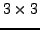

Gan_Matrix34 m34A;
From now on, we shall describe the routines for double precision matrices
only. Single precision functions are very similar and will be explained below.
Setting the coordinates of a
Gan_Matrix34 m34A = {1.0, 2.0, 3.0, 4.0,
5.0, 6.0, 7.0, 8.0,
9.0, 10.0, 11.0, 12.0};
m34A.xx = 1.0; m34A.xy = 2.0; m34A.xz = 3.0; /* etc. */
gan_mat34_fill_q ( &m34A, 1.0, 2.0, 3.0, 4.0,
5.0, 6.0, 7.0, 8.0,
9.0, 10.0, 11.0, 12.0 );
Note that the Gnu C compiler prints a warning when the above call is compiled,
and also for most other similar calls in the linear algebra package.
This warning can be avoided by inserting an initial (void) cast:
(void)gan_mat34_fill_q ( &m34A, 1.0, 2.0, 3.0, 4.0,
5.0, 6.0, 7.0, 8.0,
9.0, 10.0, 11.0, 12.0 );
We omit this cast in the following to keep the exposition simple.
m34A = gan_mat34_fill_s ( 1.0, 2.0, 3.0, 4.0,
5.0, 6.0, 7.0, 8.0,
9.0, 10.0, 11.0, 12.0 );
The methods of initialising a  matrix follow those listed above
for  matrices, for instance
matrices, for instance
Gan_Matrix33 m33A;
gan_mat33_fill_q ( &m33A, 1.0, 2.0, 3.0,
4.0, 5.0, 6.0,
7.0, 8.0, 9.0 ); /* OR */
m33A = gan_mat33_fill_s ( 1.0, 2.0, 3.0,
4.0, 5.0, 6.0,
7.0, 8.0, 9.0 );
For a symmetric or lower triangular
Gan_SquMatrix33 matrix, direct initialisation (options 1 and 2 above) is
not advisable, because of the type field of the structure whose
presence depends on NDEBUG, Instead use the macro calls
Gan_SquMatrix33 sm33S, sm33L;
/* symmetric matrix */
gan_symmat33_fill_q ( &sm33S, 1.0,
2.0, 3.0,
4.0, 5.0, 6.0 );
/* lower triangular matrix */
gan_ltmat33_fill_q ( &sm33L, 1.0,
2.0, 3.0,
4.0, 5.0, 6.0 );
The first of these fills the matrix without specifying the values above the
diagonal, and actually builds the matrix
gan_mat34_zero_q ( &m34A ); /* OR */ m34A = gan_mat34_zero_s();
gan_mat33_zero_q ( &m33A ); /* OR */ m33A = gan_mat33_zero_s();
gan_symmat33_zero_q ( &sm33S ); /* OR */ sm33S = gan_symmat33_zero_s();
gan_ltmat33_zero_q ( &sm33L ); /* OR */ sm33L = gan_ltmat33_zero_s();
Setting a square matrix to identity is achieved using
gan_mat33_ident_q ( &m33A ); /* OR */ m33A = gan_mat33_ident_s();
gan_symmat33_ident_q ( &sm33S ); /* OR */ sm33S = gan_symmat33_ident_s();
gan_ltmat33_ident_q ( &sm33L ); /* OR */ sm33L = gan_ltmat33_ident_s();
Copying  matrices can be accomplished either by direct assignment
matrices can be accomplished either by direct assignment
Gan_Matrix34 m34B;
m34B = m34A;
or by use of one of the routines
gan_mat34_copy_q ( &m34A, &m34B ); /* macro, OR */
m34B = gan_mat34_copy_s ( &m34A ); /* function call */
The methods of copying general, symmetric and lower triangular matrices follow
that of